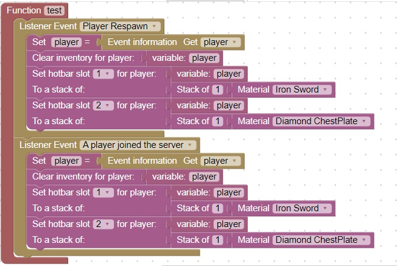
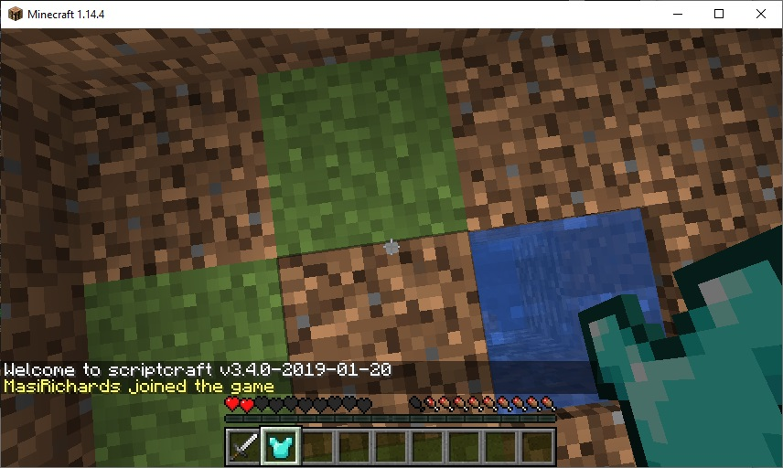

Respawn Player Event (Continued)
When a player respawns or joins the server, clear the players inventory, and give them an iron sword in the first hotbar,
and a diamond chestplate in the second hotbar
You can use this code as a reference:

Your hotbar should look like:
